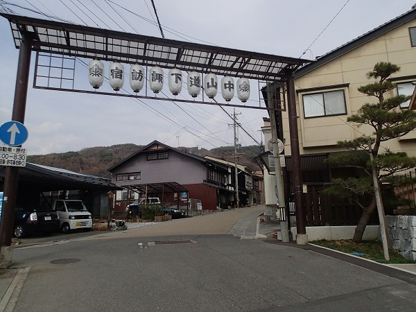

日本橋を出発して長野県下諏訪宿まで約209Km 標高差約1096m(笹子峠）。
歩き距離・時間はｽﾀｰﾄ駅から到着駅までです。
| 年月日 | 出発駅・時間 | 到着駅・時間 | 歩き距離・時間 | 写真ﾌﾞﾛｸﾞ |
|---|---|---|---|---|
| 2015/1/11 | 東京駅_9:05 | 調布駅_14:43 | 29.0Km：5時間38分 | 2015/1 |
| 2015/1/14 | 調布駅_9:36 | 八王子駅_15:12 | 23.6Km：5時間36分 | 2015/1..2015/1 |
| 2015/10/5 | 八王子駅_10:00 | 髙尾駅_12:15 | 10.1Km：2時間15分 | 2015/10武蔵野御陵,,, |
| 2015/10/9 | 髙尾駅_9：59 | 相模湖駅_15:23 | 22.6Km：5時間23分 | 2015/10..,,,2015/10..,,,2015/10,,, |
| 2015/10/12 | 相模湖駅_7:59 | 鳥沢駅_15:25 | 28.9Km：7時間26分 | 2015/10..2015/10..2015/10 |
| 2015/10/21 | 鳥沢駅_7:37 | 笹子_13:38 | 22.7Km：6時間00分 | 2015/10..2015/10..2015/10 |
| 2015/11/21 | 笹子_9:26 | 甲斐大和駅_14:14 | 19.5Km：4時間47分 | 2015/11..2015/11..2015/11 |
| 2015/12/17 | 甲斐大和駅_9:20 | 酒折駅_15:30 | 23.9Km：6時間10分 | 2015/12..2015/12..2015/12..2015/12 |
| 2015/12/17 | 酒折駅_9:20 | 韮崎駅_15:30 | 23.9Km：6時間10分 | 2015/12..2015/12 |
| 2016/3/15 | 韮崎駅_10:07 | 日野春駅_14:17 | 16.9Km:4時間10分 | 2016/3..2016/3..2016/3 |
| 2016/3/21 | 日野春駅_10:06 | 信濃境駅_15:15 | 21.5Km:5時間9分 | 2016/3..2016/3..2016/3..2016/3..2016/3 |
| 2016/3/29 | 信濃境駅_10:40 | 青柳駅_15:21 | 16.4Km:4時間40分 | 2016/3..2016/3..2016/3 |
| 2016/3/30 | 青柳駅_7:44 | 下諏訪駅_14:27 | 23.5Km:6時間43分 | 2016/3..2016/3..2016/3..2016/3..2016/3..2016/3.完歩する |
下諏訪宿 中山道の宿場でもあり甲州街道の終点
